Synthèse
| Élément | Relevé |
|---|---|
| Site audité | https://ssapaysdemorlaix.fr/ |
| Date de l'audit | 2026-11-13 |
| Pages lues | 18 |
| Anciennes adresses (redirections à prévoir) | 18 |
| Variantes à paramètres (langue, pagination) | 40 ; langues : fr, br |
| Images de contenu récupérées | 52 |
| Fichiers fournis par le client | 2 |
Chaque fait ci-dessous a été lu sur le site actuel, avec la page source. Il reste à confirmer par le client avant d'entrer dans le nouveau site.
Identité visuelle relevée
Logo

logo (lien vers l'accueil) · fichiers/logo-3fdacda0caeb.svg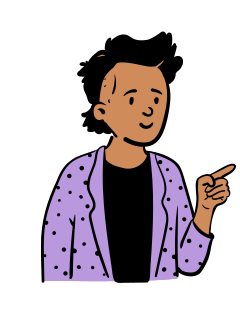
image nommée logo · fichiers/peep-52-77c62eeae8c5.svgimage nommée logo · fichiers/buzuk-09f5b1ac4f31.webp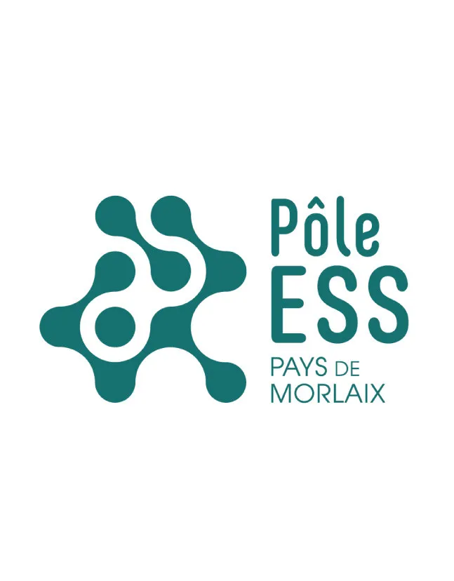
image nommée logo · fichiers/ess-990370411167.webp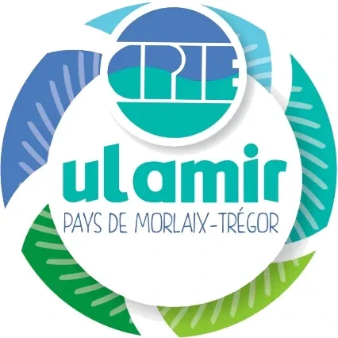
image nommée logo · fichiers/20251211-083116-1-9f9a74e8e3f7.webp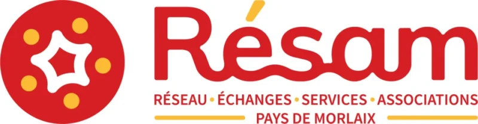
image nommée logo · fichiers/resam-210c8521ebfe.webp
Couleurs
Couleurs les plus présentes, avec leur contraste sur blanc et sur noir (texte courant : 4,5:1 au moins ; grand texte et contrôles : 3:1).
#364a6b· texte-action
sur blanc 8,94:1 · sur noir 2,35:1#ffffff· fond-action
sur blanc 1,00:1 · sur noir 21,00:1#000000· texte
sur blanc 21,00:1 · sur noir 1,00:1#43c466· fond-action
sur blanc 2,25:1 · sur noir 9,33:1#fdb544· fond
sur blanc 1,77:1 · sur noir 11,87:1#1d2e4a· texte-action
sur blanc 13,62:1 · sur noir 1,54:1#555555· texte-action
sur blanc 7,46:1 · sur noir 2,82:1#3788d8· fond
sur blanc 3,70:1 · sur noir 5,68:1
Couleurs du logo
#fdb544· logo
sur blanc 1,77:1 · sur noir 11,87:1#364a6b· logo
sur blanc 8,94:1 · sur noir 2,35:1#43c466· logo
sur blanc 2,25:1 · sur noir 9,33:1#a8a8a8· logo
sur blanc 2,38:1 · sur noir 8,83:1#d08b5b· logo
sur blanc 2,79:1 · sur noir 7,53:1#ba98de· logo
sur blanc 2,43:1 · sur noir 8,63:1
Polices
| Usage | Valeur relevée |
|---|---|
| Corps de texte | system-ui, -apple-system, BlinkMacSystemFont, "Segoe UI", Roboto, Oxygen, Ubuntu, Cantarell, "Open Sans", "Helvetica Neue", sans-serif |
| Titres | system-ui, -apple-system, BlinkMacSystemFont, "Segoe UI", Roboto, Oxygen, Ubuntu, Cantarell, "Open Sans", "Helvetica Neue", sans-serif |
| Boutons et liens | system-ui, -apple-system, BlinkMacSystemFont, "Segoe UI", Roboto, Oxygen, Ubuntu, Cantarell, "Open Sans", "Helvetica Neue", sans-serif |
| Polices chargées | aucune (polices du système) |
Licence de chaque police à vérifier avant reprise : une police libre (Google Fonts, OFL) est servie depuis le site en woff2 ; une police commerciale demande la licence web du client.
Coordonnées et identité légale relevées
| Téléphone | Pages sources |
|---|---|
| 06 15 06 82 08 | /, /mentions-legales |
| Pages sources | |
|---|---|
| ssapaysdemorlaix@mailo.com | /, /projet, /mentions-legales |
| candidature@mailo.com | /projet |
| Code postal et ville | Pages sources |
|---|---|
| aucune adresse relevée |
| SIREN ou SIRET | Pages sources |
|---|---|
| aucun relevé : à demander (mentions légales obligatoires) |
| Réseaux sociaux | Pages sources |
|---|---|
| https://www.youtube.com/@jneasso9668/featured | /article/10 |
Arborescence actuelle
Menu principal : Accueil (/#hero-anchor), Qui sommes-nous ? (/#about-anchor), Actualités (/#actu-anchor), Évènements (/#event-anchor), Le projet SSA (/projet), Galerie (/galerie), Contact (/#contact-anchor), Mentions légales (/mentions-legales), Confidentialité (/confidentialite), Accessibilité (/accessibilite).
| Adresse | Titre | Titre principal (h1) | Mots |
|---|---|---|---|
/ | Sécurité Sociale de l’Alimentation · Pays de Morlaix | Sécurité Sociale de l’Alimentation · Pays de Morlaix | 398 |
/projet | Sécurité Sociale de l’Alimentation · Pays de Morlaix | Expérimentation d'une caisse de l'alimentation sur le Pays de Morlaix | 346 |
/galerie | Sécurité Sociale de l’Alimentation · Pays de Morlaix | Galerie de la SSA | 51 |
/mentions-legales | Sécurité Sociale de l’Alimentation · Pays de Morlaix | Mentions légales | 255 |
/confidentialite | Sécurité Sociale de l’Alimentation · Pays de Morlaix | Politique de confidentialité | 287 |
/accessibilite | Sécurité Sociale de l’Alimentation · Pays de Morlaix | Déclaration d'accessibilité | 295 |
/article/16 | Sécurité Sociale de l’Alimentation · Pays de Morlaix | Carte des points de vente conventionnés | 136 |
/article/17 | Sécurité Sociale de l’Alimentation · Pays de Morlaix | Soirée de lancement de la caisse citoyenne | 81 |
/article/15 | Sécurité Sociale de l’Alimentation · Pays de Morlaix | Synthèse en vidéo de l'atelier du parcours citoyen du 14 mars 2026 | 112 |
/article/12 | Sécurité Sociale de l’Alimentation · Pays de Morlaix | SSA dans les médias | 94 |
/article/11 | Sécurité Sociale de l’Alimentation · Pays de Morlaix | Intervention Emission Radio U - Podcast | 235 |
/article/10 | Sécurité Sociale de l’Alimentation · Pays de Morlaix | Colloque "Ensemble cultivons l'avenir de notre alimentation" | 147 |
/article/9 | Sécurité Sociale de l’Alimentation · Pays de Morlaix | Parcours citoyen : Intervention de Jean Claude Balbot | 206 |
/article/14 | Sécurité Sociale de l’Alimentation · Pays de Morlaix | Vidéo fonctionnement du collectif d'animation de l'expérimentation | 103 |
/article/8 | Sécurité Sociale de l’Alimentation · Pays de Morlaix | Journée d'immersion à la ferme | 113 |
/article/13 | Sécurité Sociale de l’Alimentation · Pays de Morlaix | Vidéo de présentation du projet SSA | 90 |
/article/6 | Sécurité Sociale de l’Alimentation · Pays de Morlaix | Journée de lancement du Parcours citoyen | 133 |
/login | Sécurité Sociale de l’Alimentation · Pays de Morlaix | aucun | 28 |
Toutes les anciennes adresses recevront une redirection permanente (301) vers leur nouvelle page : le référencement acquis est conservé.
Constats
| Constat | Pages concernées |
|---|---|
| Pages sans description pour les moteurs | 0 sur 18 |
| Pages sans titre principal unique (h1) | 1 sur 18 |
| Images sans texte alternatif | 0 sur 52 |
| Pages en échec de lecture | 0 |
| Adresses en erreur (404 ou autre) | 0 |
| Site servi en HTTPS | oui |
| Données structurées (schema.org) sur l'accueil | non |
Captures du site actuel
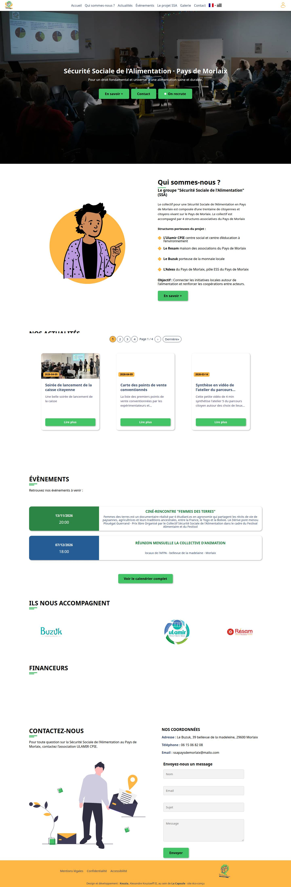
/ 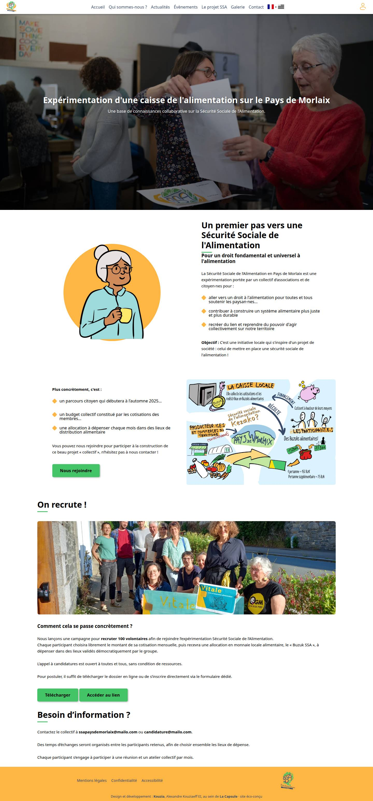
/projet 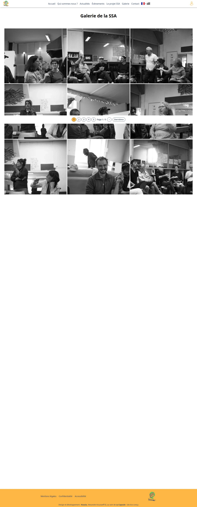
/galerie 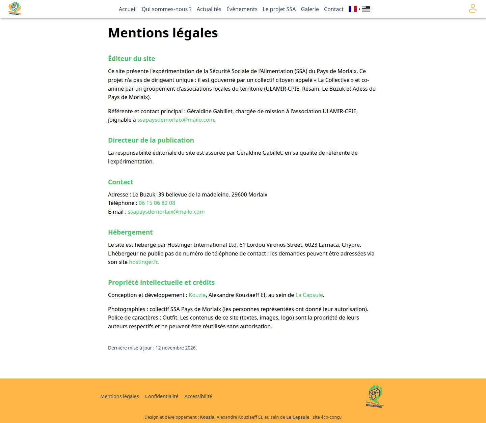
/mentions-legales 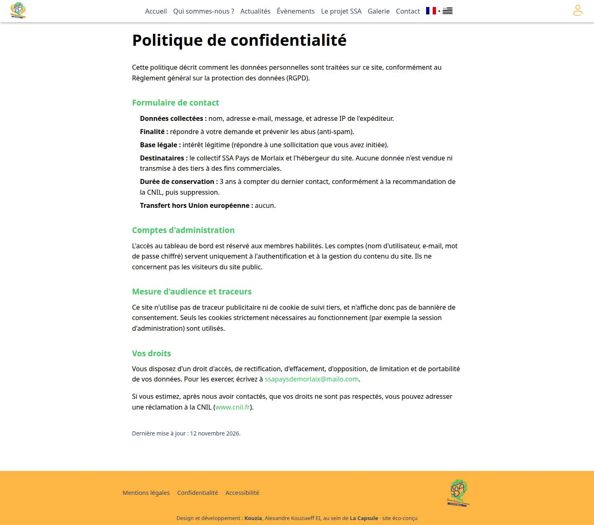
/confidentialite 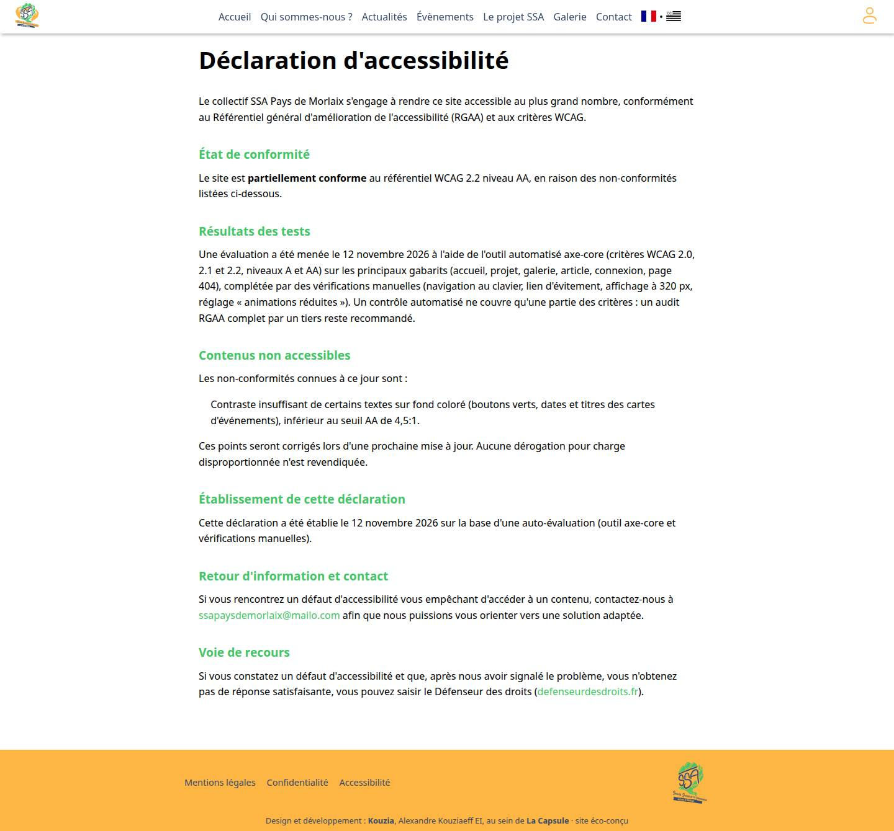
/accessibilite 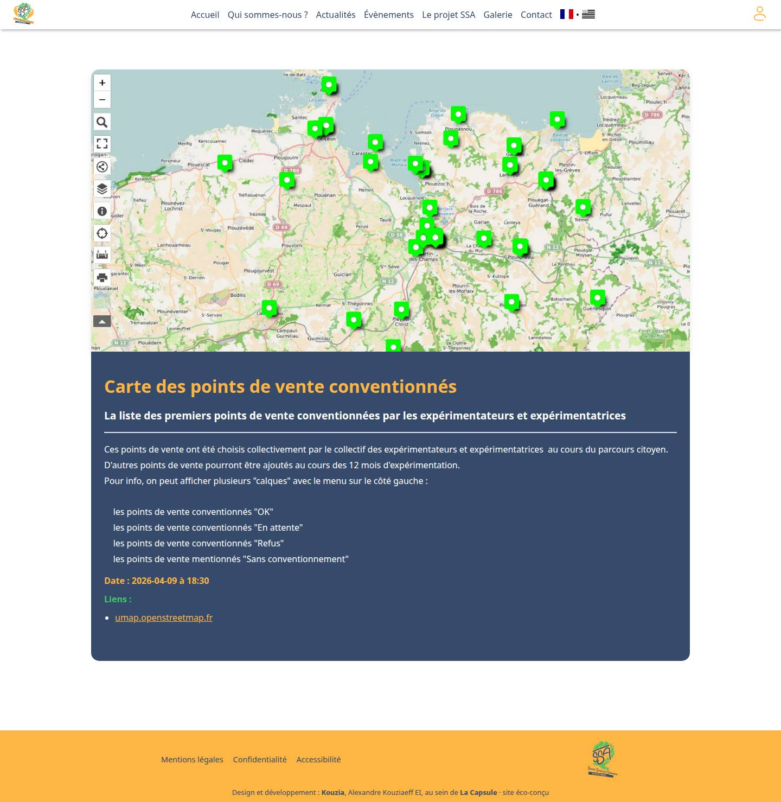
/article/16 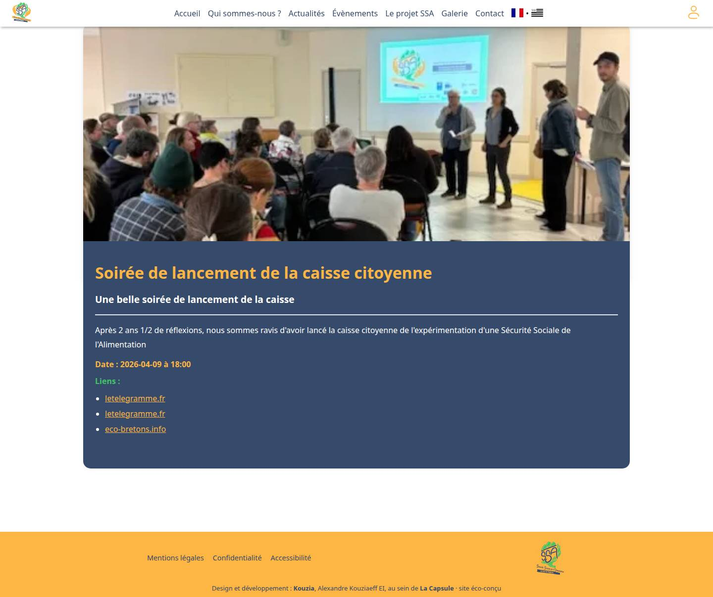
/article/17
Fichiers fournis par le client
| Fichier | Type | Poids | Dimensions |
|---|---|---|---|
docs/source/fournis/documents/dossier_de_candidature.pdf | 595 Ko | ||
docs/source/fournis/logo/logo.svg | svg | 111 Ko | 433 × 446 |